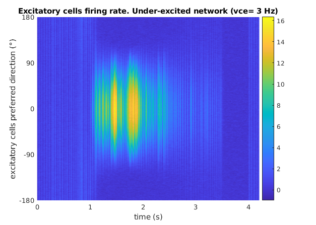
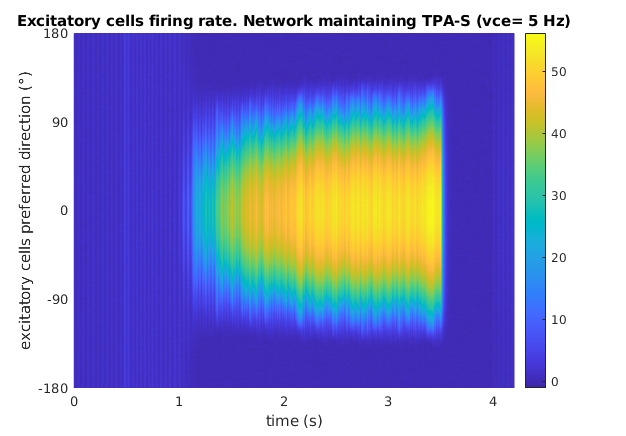
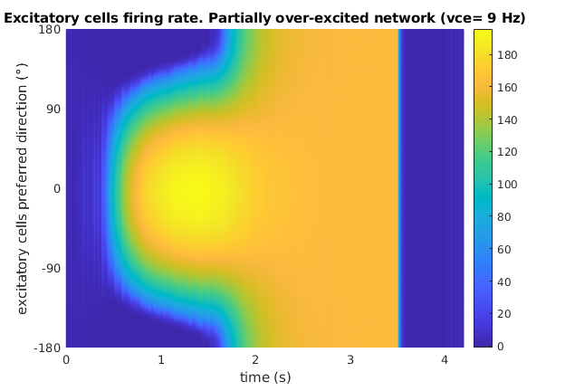
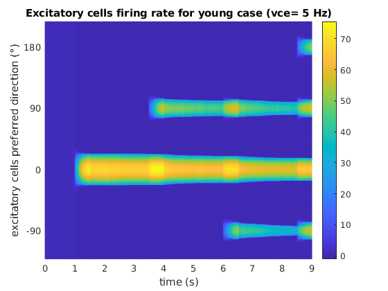
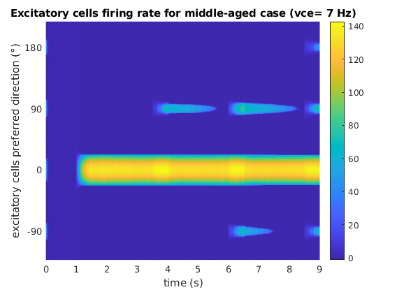
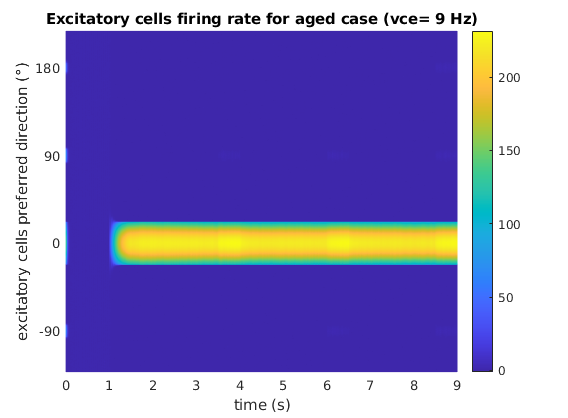

This is the readme for the models associated with the paper
"Network models predict that pyramidal neuron hyperexcitability
and synapse loss in the dlPFC lead to age-related spatial working
memory impairment in rhesus monkeys"
by Sara Ibañez, Jennifer I.
Luebke, Wayne Chang, Danel Draguljić, and Christina M. Weaver.
Frontiers in Computational Neuroscience 2020.
The ZIP file contains examples of two spatial working memory tasks: the
Delayed Response Task (DRT) or oculomotor task & the Delayed
Recognition Span Task in the spatial condition (DRSTsp)
These MATLAB files are modifications of code provided by Klaus Wimmer
(accompanying the publication Wimmer et al. 2014 in Nature
Neuroscience), revised by Sara Ibañez who contributed them here.
These files were verified to function properly in MATLAB R2016a, and R2019b.
The two matlab scripts can be run by typing their names at the matlab prompt.
DRT model
Model for the (oculomotor) Delayed Response Task based on the bump
attractor dynamics. The network is an excitatory-inhibitory network
of the prefrontal cortex with 640 excitatory neurons and 160
inhibitory neurons. Model neurons described by the firing-rate model.
The model (in about 10 seconds of run time) shows 3 different outputs: an under-excited network
(persistent activity ends before the end of the delay),

a network maintaining persistent activity tuned to the stimulus location until
the end of the delay,

and a partially over-excited network (all excitatory cells start firing
at the same rate),

for 3 different values of the “excitability parameter”, vce. This parameter
controls the "slope" of the f-I curve for the individual
neurons. That is, their firing activity for each input current.
DRST (spatial) model
Simple model of the Delayed Recognition Span Task (in the spatial condition)
based on the Delayed Response Task setup (with bump attractor
dynamics). The network is an excitatory-inhibitory network of the
prefrontal cortex with 640 excitatory neurons and 160 inhibitory
neurons with short-term synaptic facilitation in the excitatory
synapses of the excitatory neurons. Model neurons described by the
firing-rate model. The model (about 20 seconds of run time) will generate
examples of “young”,

“middle-aged”

and “aged” networks

described by the excitability parameter vce.